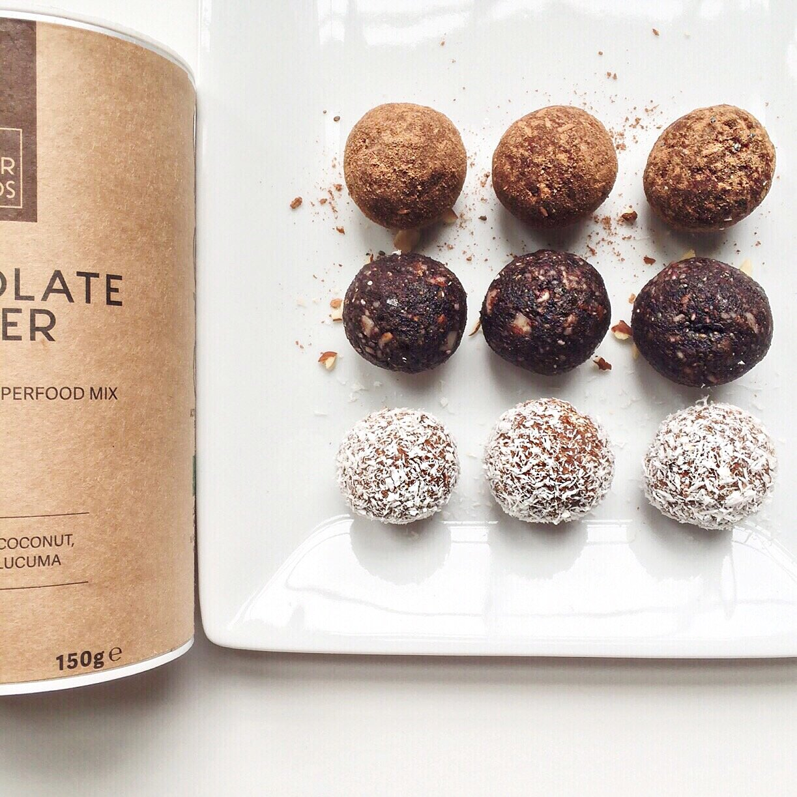
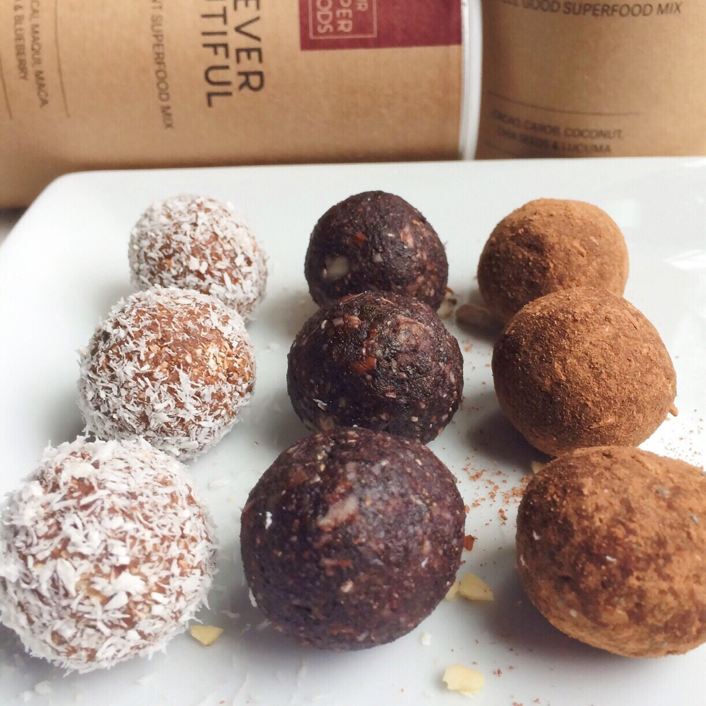

Superfoods!! - Chocolate Coconut Bliss Balls & Almond Acai Beauty Balls
Let's talk about superfoods! I absolutely hate how this word is thrown around everywhere now. Blueberries? Superfood. Pomegranate? Superfood. Eggs? Apparently a superfood?? Ok wait whoa.
It's kind of just ridiculous to see the word slapped on every product just for sales. What is a superfood anymore? If you ask me, anything whole, fresh, and in it's natural form is a superfood. Additives? Not superfoods. Food dye? Not superfoods.
I was sent these mixes by yoursuperfoods to try, being able to choose which flavors I wanted. And honestly, I am so in love with them. I feel these are truly the definition of a superfood blend. My two favorites are used in these next two recipes - Chocolate Lovers and Forever Beautiful. With ingredients such as chia seeds, maca, acai, and lucuma, they just feel so beneficial and health-boosting. Especially as a vegan now, I have to ensure every nutrient my body needs comes from plant sources like these concentrated foods. The labels can be overwhelming with words such as "antioxidants", "phytonutrients", and "essential omega 3 fatty acids" - but just know they're good, whole foods. They are genuine and not trying to "pass one over" on you.
I'm really excited to use more of these in my foods. It's pretty easy to toss a tablespoon in oats, a smoothie, some yogurt... And they actually tasteee gooood. That's the major key here, haha. I've bought some of these ingredients in their singular raw form and never end up actually using them since they taste bland or bad alone.
I realize this is sounding more and more like a sponsored post loool oops but it's not. I just really like this product I got to try and yeah. Try these two recipes out. Super easy and just 4 ingredients or less!!


Chocolate Coconut Bliss Balls (superfoods)
Makes 6 Balls
-
60 g pitted dates
-
1/4 cup raw oats (20 g)
-
2 TBSP unsweetened coconut (7 g)
-
15 g chocolate lovers Yoursuperfoods mix (2-3 TBSP)
Blend the ingredients. Once blended, add a tbsp of water to make the blend malleable and stick together. Roll into 6 balls! Coat with more chocolate lovers mix or shredded coconut (both taste great - I prefer the coconut ones).
1 ball: 60 calories, 1 g fat, 12 g carbs (2 g fiber), and 1 g protein
Almond Açai Beauty Balls (superfoods)
Makes: 6 Balls
-
60 g pitted dates
-
1/4 cup chopped almonds (30 g)
-
15 g forever beautiful Yoursuperfoods mix (1 TBSP)
Blend the ingredients. Once blended, add a tbsp of water to make the blend malleable and stick together. Roll into 6 balls!
1 ball: 70 calories, 3 g fat, 9 g carbs (2 g fiber), and 2 g protein